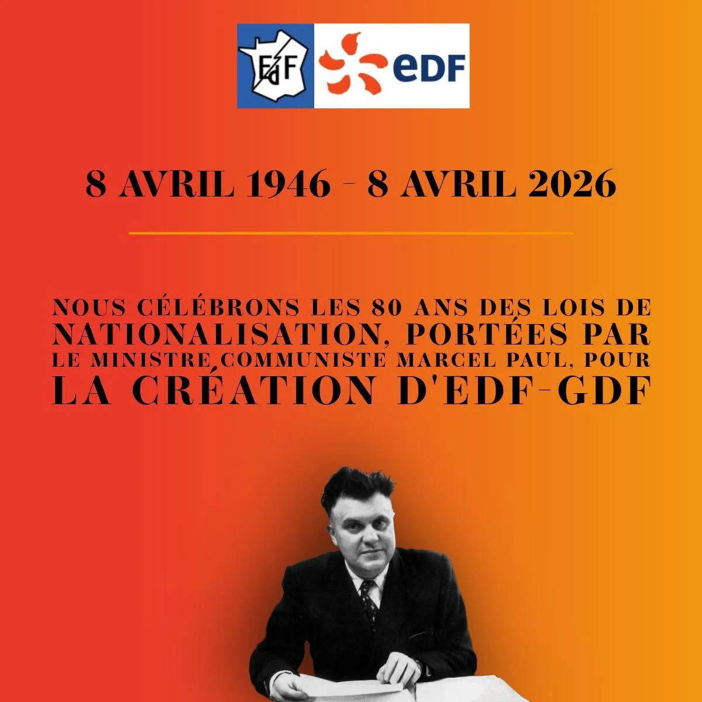
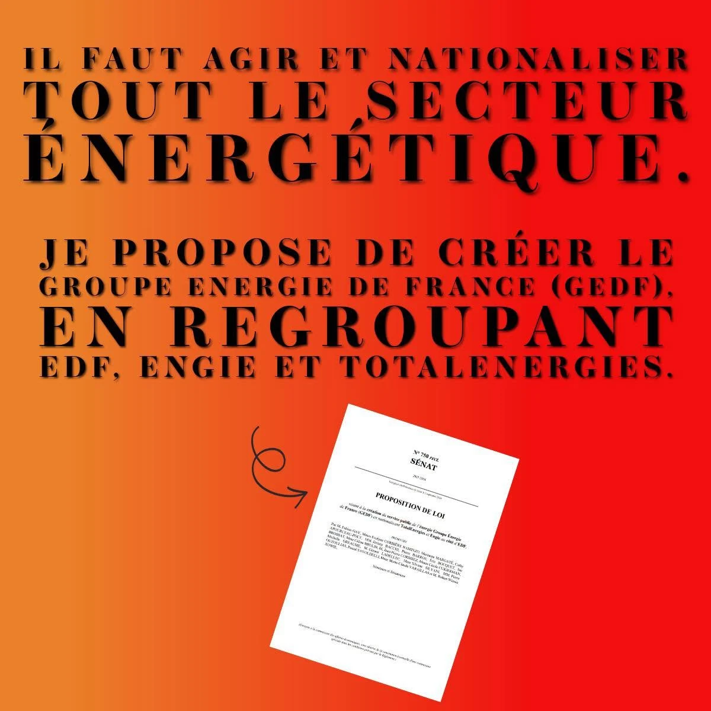
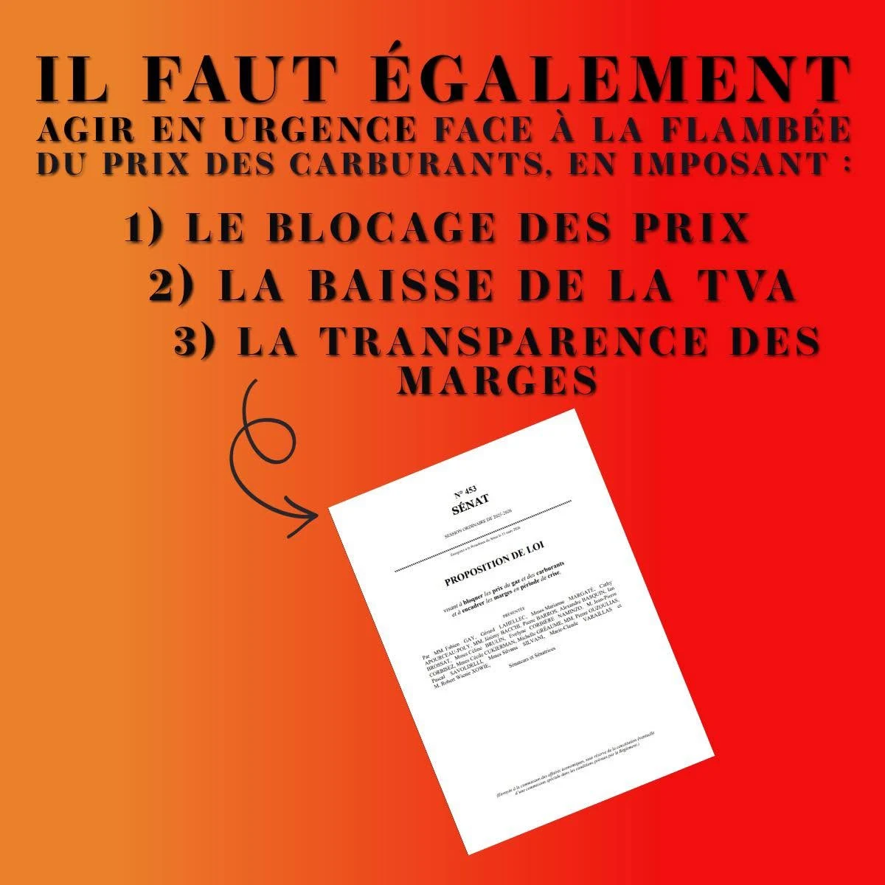

Publication relayée par le PCF 79
EDF et GDF. Fabien Gay revient sur les 80 ans de la nationalisation
Date de mise à jour indiquée par Facebook · 8 avril 2026
Texte de la publication · Fabien Gay
8 avril 1946 – 8 avril 2026
Il y a 80 ans, Marcel Paul, ministre communiste, nationalisait 1 300 entreprises gazières et électriques pour créer EDF et GDF.
Deux entreprises intégrées – de la production à la distribution en passant par le transport – ont permis, grâce à la péréquation tarifaire, au plus grand nombre d’accéder à l’énergie.
La libéralisation du secteur et le démantèlement de nos entreprises publiques ont fait exploser les prix, voler les tarifs en éclats et grossir les rentes des requins privés.
Aujourd’hui, deux enjeux majeurs s’imposent :
- sortir 13 millions de personnes de la précarité énergétique ;
- lutter contre le réchauffement climatique en électrifiant massivement les usages et en sortant des énergies fossiles.
Il y a deux ans, j’ai déjà proposé de nationaliser TotalEnergies et ENGIE aux côtés d’EDF pour fonder le GEDF– Groupe Énergie de France !
Et d’urgence, il faut bloquer les prix de l’essence, imposer la transparence totale des marges et baisser la TVA.



Sources
Fabien Gay · publication relayée par le PCF 79 · bibliothèque Facebook · AR-0002-FB-00825
À lire aussi · Les 80 ans de la nationalisation de l’électricité et du gaz en débat à la CGT